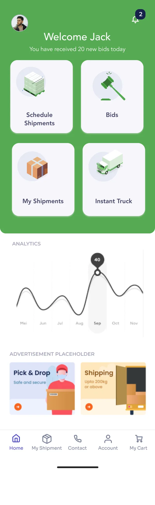
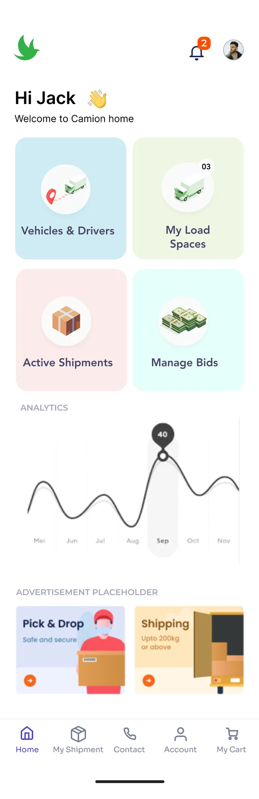
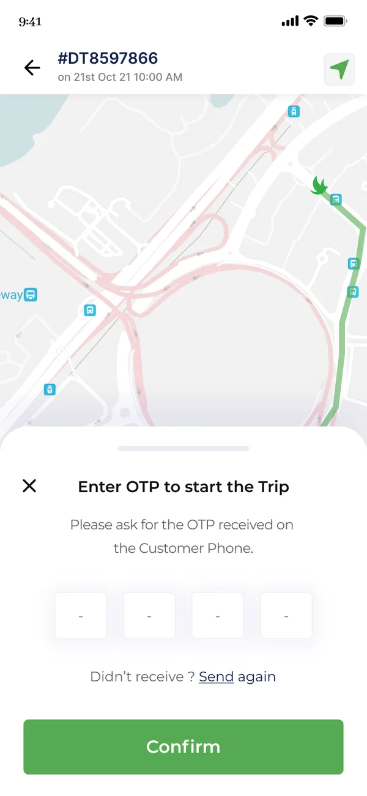
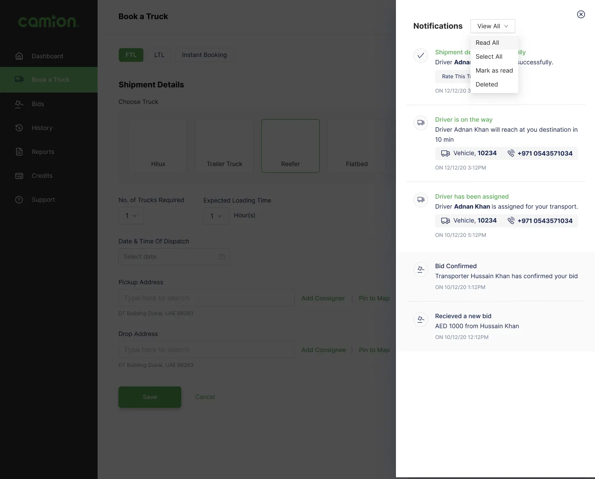
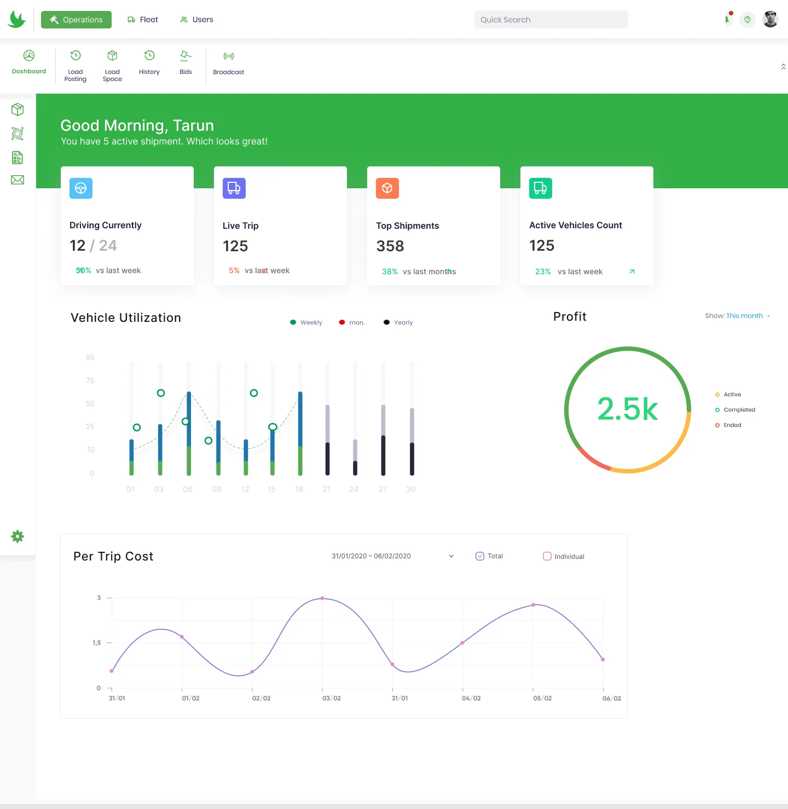
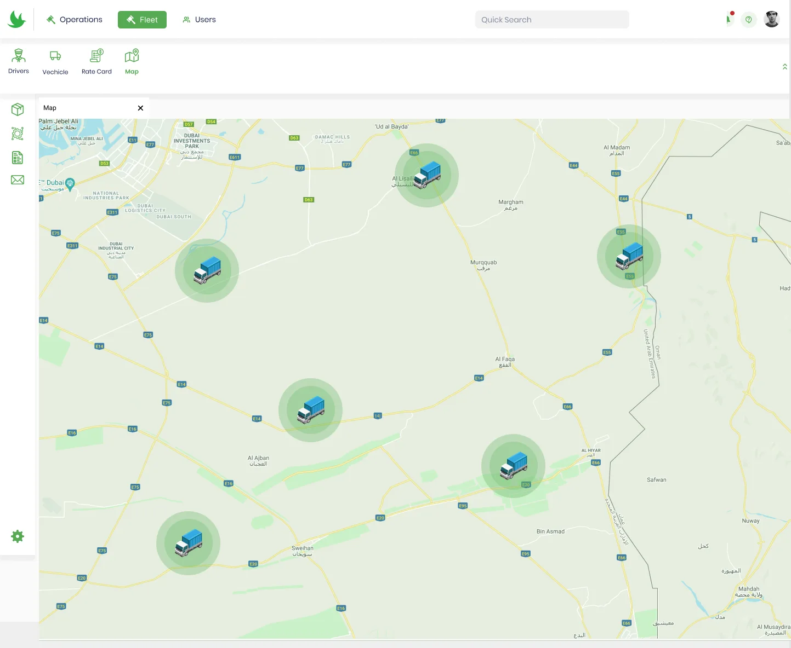
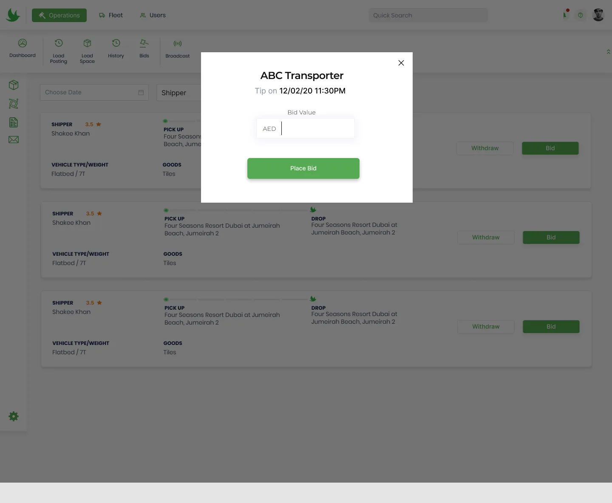

Book a truck like a taxi.
Leading the entire design initiative for Camion, a Dubai trucking marketplace: one platform where shippers post loads, transporters bid and manage fleets, and drivers run every trip from their phone.



Camion trucking marketplace
A marketplace that connects the three people behind every shipment: the shipper who needs a truck, the transporter who owns it and the driver who drives it.
Trucking in the UAE ran on phone calls.
Booking a truck meant calling around, negotiating price by phone and chasing drivers for updates. Camion wanted to turn that into a marketplace with live bids, tracking and proof of delivery.
I led design end to end: mapping the shipper and transporter workflows, designing the web portal and the mobile apps, and building the component library they share.
Post a load
Choose a truck, set pickup and drop, get bids.
Win and run work
Bid on loads, manage vehicles, drivers and rate cards.
Drive the trip
Start with an OTP, navigate, confirm delivery.
Keep it moving
Notifications, support and credits across roles.
- My role
- Design lead
- Client
- Camion, Dubai
- Apps
- Shipper, transporter, driver
- Platforms
- Web & mobile
- Status
- Launched
Three users, one shipment.
A shipper, a transporter and a driver all touch the same trip, but each needs a different tool. Every status change had to reach the right person at the right time.
Price by negotiation
Shippers called several transporters to compare quotes.
No visibility after booking
Nobody knew where the truck was until it arrived.
Fleets on spreadsheets
Transporters tracked vehicles, drivers and rate cards by hand.
Paper proof of delivery
PODs were photos on WhatsApp, easy to lose.
Designing a three-sided marketplace
We mapped the shipper and transporter workflows step by step (onboarding, post load, bids, credits, support, notifications) before designing a single screen.
One trip, one status
Every app shows the same trip state, from bid to delivered.
Bids, not phone calls
Shippers post once and compare offers side by side.
Big targets for drivers
Driver screens are built for gloves, sunlight and one hand.
Arabic-ready, mobile-first
Layouts and icons that work across the region.
Post a load in under a minute
Shippers pick a truck type, set the number of trucks, goods and packaging, then add pickup and drop. Instant booking is there for urgent loads.

Trucks you can see
Illustrated truck types replace jargon, so shippers pick the right size first time.
Instant booking
Urgent loads skip bidding and go straight to the nearest available truck.
Bids side by side
Offers arrive as cards with rating, price and vehicle.
Run a fleet from one dashboard
Transporters see active trips, utilisation and profit at a glance, bid on open loads, and manage vehicles, drivers and rate cards, on the web portal or the app.




Utilisation first
Idle trucks cost money, so utilisation leads the dashboard.
Bidding in one step
A modal over the load list keeps context while bidding.
Live trip timeline
Each stage, from pickup to unloading, updates as the driver moves.
A trip app built for the cab of a truck
Drivers sign in, receive trips, start each one with an OTP from the customer and follow the route, with notifications for every change.
OTP to start
A code from the customer confirms the right truck is at the right place.
Large tap targets
Buttons sized for gloves and a moving cab.
Proof on the phone
Delivery is confirmed in-app, and the POD is shared automatically.
What shipped
Camion launched as one marketplace with three connected apps, so every shipment is visible to everyone involved, from bid to delivery.
connected apps: shipper, transporter, driver
platforms: web portal and mobile
shared component library
time to book a truck (illustrative)
Map the workflow before the screens. Writing out every shipper and transporter step exposed hand-offs that later became notifications.
Design for the hardest context. The driver app set the bar for clarity across the whole product.
One status language. Using the same trip states in every app removed most support questions.